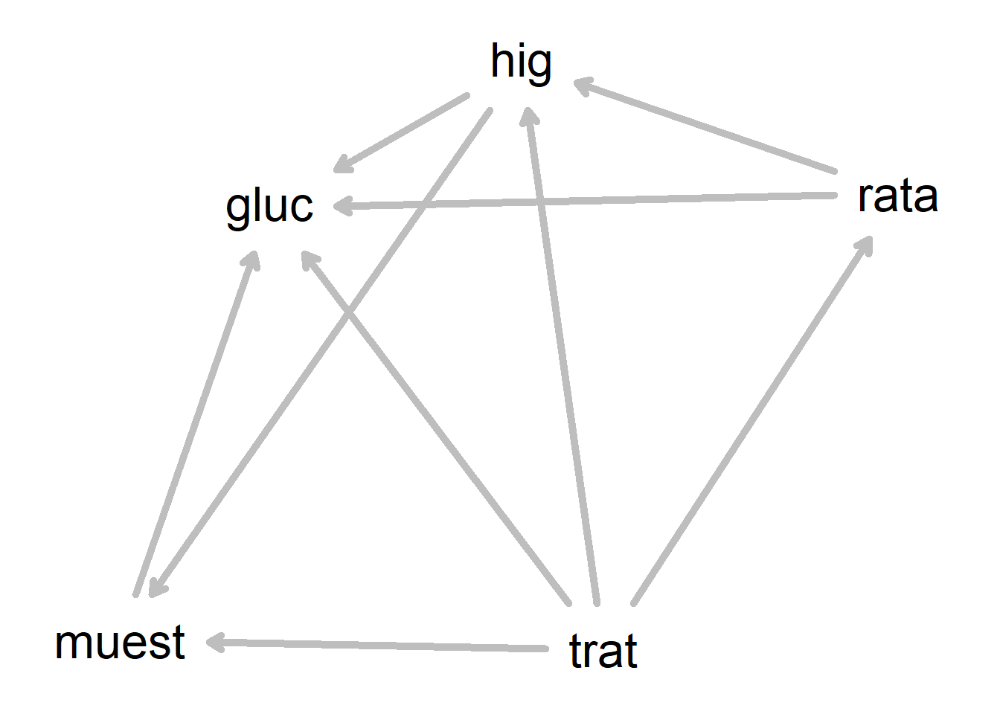

Diseños con multiples niveles de unidades experimentales
Hay situaciones en las que un estudio requiere considerar unidades experimentales múltiples. Por ejemplo, si estamos haciendo un estudio en parcelas forestales y las parcelas son sujetas a tratamientos, claramente esas parcelas son las unidades experimentales de primera mano.
Sin embargo, imaginemos que la variable de respuesta es el contenido de nitrógeno en el suelo, Es poco práctico recolectar la totalidad del suelo hasta, digamos 15cm de profundidad de cada parcela para determinar el contenido de nitrógeno en el suelo de toda la parcela.
¿Qué opciones tenemos?
La opción natural sería en este caso tomar una muestra de suelo en cada parcela, y hacer las determinaciones de contenido de nitrógeno en ellas. Al hacer esto, no conoceremos el contenido de nitrógeno de las parcelas, lo estimaremos con un margen de error, es decir con un componente de varianza asociado con el procedimiento de muestreo. Las muestras son lo que podríamos llamar unidades experimentales pequeñas que, además del efecto del tratamiento son afectadas por el procedimiento de muestreo como factor adicional.
Otra situación es, por ejemplo, un experimento sobre el efecto del cambio climático sobre la fotosíntesis de árboles sujetos a distintos niveles de fertilizante. La situación se complica porque lo que interesa es saber si el incremento en la temperatura afecta el contenido de nitrógeno en las hojas, para lo cual se opta por hacerlo mediante un muestreo en el que se eligen ramas en cada árbol para exponerlas a una atmósfera a temperaturas controladas. ¿Cuantas hojas habríamos de utilizar para hacer las determinaciones confiablemente?
Los árboles son unidades experimentales grandes tratadas con fertilizante y las ramas son unidades experimentales chicas que reciben el tratamiento factorial fertilizante + temperatura. Además hay que notar que muy probablemente hay un efecto “idiosincrático” del árbol que genera variación en el comportamiento de las ramas.
Plot coordinates for graph not supplied! Generating coordinates, see ?coordinates for how to set your own.
Ejemplo: Control del glucógeno en hígados de rata
Este ejemplo presentado originalmente en Sokal & Rohlf (1981). Se trata de un experimento con un solo factor con tres dietas: 1 = “control”, 2 = “compuesto 217”, 3 = “compuesto 217 + azúcar”. Fueron administrados a seis ratas, dos por tratamiento. El análisis se complica por el hecho de que, para el análisis, se tomaron tres muestras del hígado de cada rata y se hicieron dos determinaciones de contenido de glucógeno en cada muestra. Así, hay seis parcelas chicas (lo que a algunos les gusta llamar pseudorréplicas) en cada rata, para finalmente dar 36 lecturas en total.
Código
glucog_rata <-dagitty('dag{trat -> rata rata -> hig hig -> muest muest -> gluc trat -> gluc rata -> gluc trat -> hig trat -> muest hig -> gluc muest -> gluc}')par(cex =2, lwd =5)plot(glucog_rata)
Plot coordinates for graph not supplied! Generating coordinates, see ?coordinates for how to set your own.

Arreglé el código para incorporar la versión con la tubo-metáfora. haciendo esto me encontré este artículo quejoso al respecto. Ni modo, comparto algo del punto de vista de ese autor.
Quizás es mala idea etiquetar a los factores en forma numérica cuando hay la posibilidad de darles un nombre que nos facilite interpretar los resultados, especialmente para los efectos fijos. Cambiemos eso para los tratamientos. Hay varias formas de hacer esto, unas más seguras que otras, pero en este caso el cambio es muy sencillo y lo podemos hacer con suficiente seguridad como lo hemos venido haciendo con la función levels. Pero para atender casos más complejos sugiero usar la biblioteca tidyverse así.
En este caso tengo una estructura anidada, así que hay podemos usar el operador de anidación %in%. Sin embargo, hay que tener cuidado, pues esto sólo añade el efecto de anidamiento especificado, no los términos principales u otros niveles de anidamiento que pudieran estar presentes. También hay que notar que un anidamiento equivale en el modelo estadístico lineal a la presencia de términos de interacción sin su contraparte de términos en la jerarquía. En este caso, no aparece ninguna interacción tratamiento:rata o tratamiento:muestraHígado, etc., pero sí aparecen las interacciones más complejas: rata:muestraHígado:tratamieno por ejemplo.
Código
ratas.completo <-lm(glucogeno ~ trat_txt + rata + muestraH + muestraH %in% rata + muestraH %in% rata %in% tratamiento, data=ratas)summary(ratas.completo)
Call:
lm(formula = glucogeno ~ trat_txt + rata + muestraH + muestraH %in%
rata + muestraH %in% rata %in% tratamiento, data = ratas)
Residuals:
Min 1Q Median 3Q Max
-6.00 -2.25 0.00 2.25 6.00
Coefficients: (2 not defined because of singularities)
Estimate Std. Error t value Pr(>|t|)
(Intercept) 130.500 3.253 40.114 < 2e-16 ***
trat_txttrat_2 2.000 4.601 0.435 0.668937
trat_txttrat_3 -24.500 4.601 -5.325 4.62e-05 ***
rata2 18.500 4.601 4.021 0.000801 ***
muestraH2 -2.500 4.601 -0.543 0.593526
muestraH3 8.500 4.601 1.848 0.081172 .
rata2:muestraH2 -5.000 6.506 -0.768 0.452171
rata2:muestraH3 -2.500 6.506 -0.384 0.705305
rata1:muestraH1:tratamiento2 18.500 6.506 2.843 0.010785 *
rata2:muestraH1:tratamiento2 2.000 6.506 0.307 0.762075
rata1:muestraH2:tratamiento2 18.000 6.506 2.767 0.012716 *
rata2:muestraH2:tratamiento2 3.500 6.506 0.538 0.597214
rata1:muestraH3:tratamiento2 9.000 6.506 1.383 0.183506
rata2:muestraH3:tratamiento2 NA NA NA NA
rata1:muestraH1:tratamiento3 23.500 6.506 3.612 0.001994 **
rata2:muestraH1:tratamiento3 14.500 6.506 2.229 0.038828 *
rata1:muestraH2:tratamiento3 34.500 6.506 5.302 4.85e-05 ***
rata2:muestraH2:tratamiento3 21.500 6.506 3.304 0.003943 **
rata1:muestraH3:tratamiento3 21.000 6.506 3.228 0.004670 **
rata2:muestraH3:tratamiento3 NA NA NA NA
---
Signif. codes: 0 '***' 0.001 '**' 0.01 '*' 0.05 '.' 0.1 ' ' 1
Residual standard error: 4.601 on 18 degrees of freedom
Multiple R-squared: 0.8856, Adjusted R-squared: 0.7775
F-statistic: 8.196 on 17 and 18 DF, p-value: 2.508e-05
Recuerda que las pruebas omnibus del ANOVA de arriba sólo tienen sentido en cuanto a comparación de medias, para los términos de efectos fijos.
¿Cómo interpretas estos resultados
Conviene saber que hay muuchas maneras de hacer lo mismo en R. esta es otra forma de lograr exactamente lo mismo, pero utilizando otra notación en la forma de escribir las ecuaciones al utilizar la función de ajuste de modelos lineales.
Como hemos dicho, en realidad la estructura de estos datos es mixta en cuanto a que incluye efectos fijos de los tratamientos y efectos aleatorios. Contiene los efectos aleatorios de la muestra que constituyen las ratas y dentro de ellas el muestreo de porciones de hígado. Así, la prueba F para el efecto de tratamientos es de interés pero, en el caso de los factores aleatorios puede valer la pena estimar los componentes de varianza asociados con cada etapa de muestreo. Una manera de hacer esto es mediante la función aov de R, dentro de la cual sólo es necesario designar las columnas que corresponden con efectos aleatorios mediante la función Error(). Estto funciona bien si el experimento es completo y balanceado.